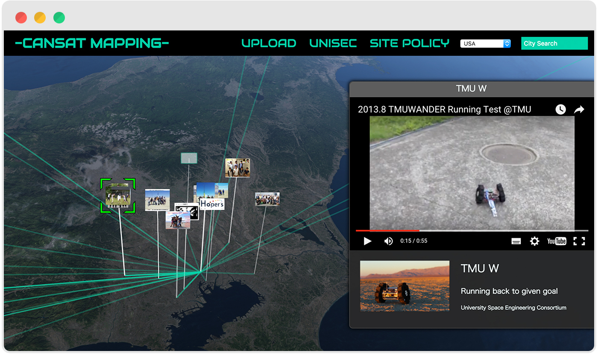
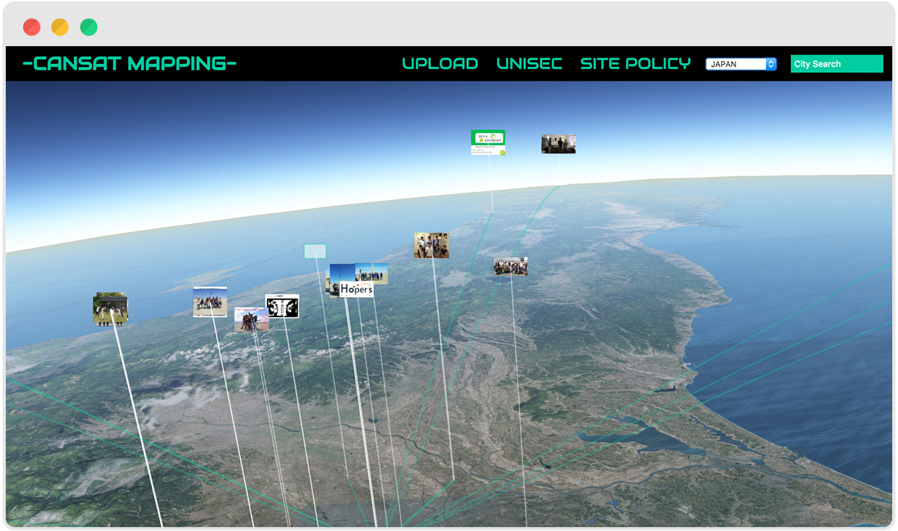
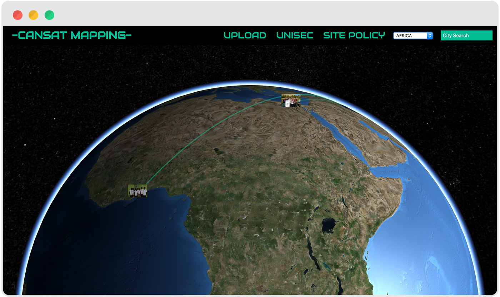
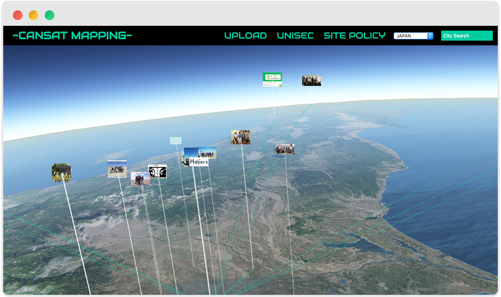
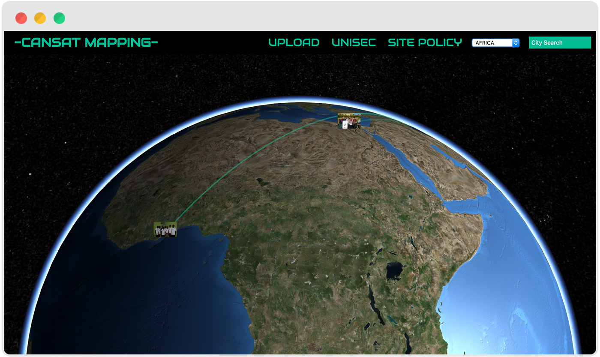

CanSatとは空き缶サイズの小型模擬人工衛星のことであり、本物の人工衛星の開発に向けた教育プログラムとして世界的に普及しています。開発したCanSatは実際に気球もしくはロケットにより上空まで運ばられ降下し、それぞれのミッションをこなします。
CanSat Mapping はこれらの開発に関する技術共有を目的とし、世界中のCanSatと制作チームのデータをデジタル地球儀上にマッシュアップしたWebコンテンツです。
 宇宙工学を学ぶ学生の情報共有プラットフォーム
CanSatとは空き缶サイズの小型模擬人工衛星のことであり、本物の人工衛星の開発に向けた教育プログラムとして世界的に普及しています。開発したCanSatは実際に気球もしくはロケットにより上空まで運ばられ降下し、それぞれのミッションをこなします。
CanSat Mapping はこれらの開発に関する技術共有を目的とし、世界中のCanSatと制作チームのデータをデジタル地球儀上にマッシュアップしたWebコンテンツです。
 小宮 慎之介, 丹生谷 祐一郎
Ver1. 2013/12 - 2014/01
2 Month
Ver2. 2015/11 - 2015/12
2 Month